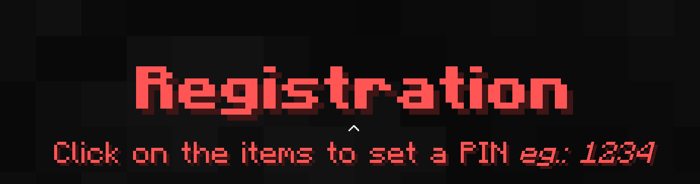
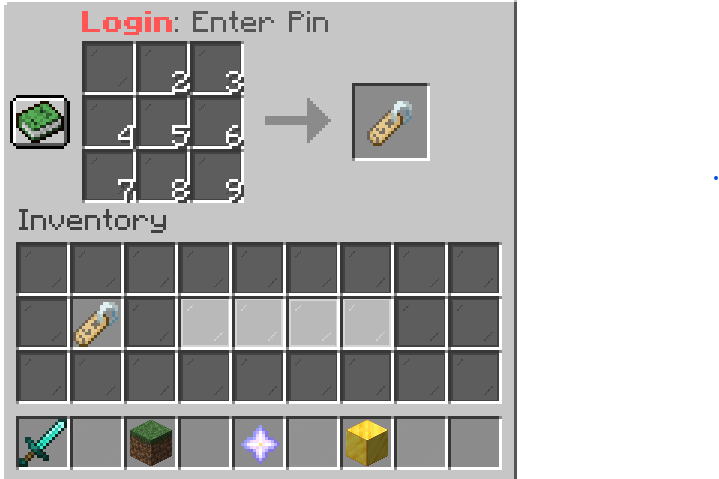
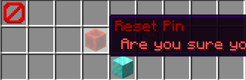
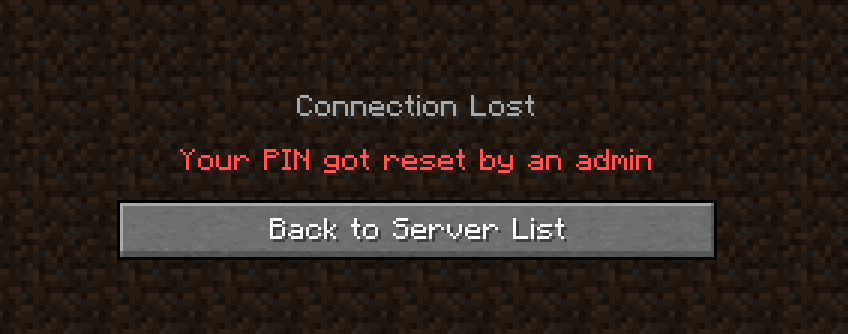

How Pins work

What are pins?
Pins are what allows you to log into your account, when you first join you need to enter
a pin you will remember, then every time you join you will have to type that pin out

Why do we have pins?
Pins are the way to keep your account from being hacked. Because our server is a
cracked server, we need pins to stop people from logging into your account with other softwares.
Is there a way to reset my pin with out a form?

Yes. There is a way to reset your pin with out the form. All you have
to do is log into your account, and type in game
/pin
This will allow you to lock your account, if you think someone is messing arround on it, and reset your pin.
When you click reset for your pin, you will be kicked from the server, and the next time you join, you have to enter
in a new pin

I think I forgot my pin or I have been hacked
What do I do?
Don't worry, if you have lost your pin or got hacked, just fill out the form to reset your pin.
If you have not verified your account, it will be harder to get it back.
How do I ask questions/support?